Starfield — Inventory Redesign
Starfield launched in fall 2023 to mixed reception. Despite genuine moments of brilliance in exploration and world-building, aspects of the interface felt hollow — like features that were originally planned had been cut. The inventory system is among the most frequently criticized aspects.
This project focuses specifically on redesigning the Inventory UI to bring it in line with the depth and organizational features expected of a Bethesda RPG.
Starfield's inventory interface lacks the organizational depth and statistical utility found in traditional RPGs — trading it for a heavily simplified layout that serves initial accessibility at the cost of long-term usability. This follows a visible pattern of progressive simplification across Bethesda's 20-year catalogue (Morrowind → Oblivion → Skyrim → Starfield).
Goals
- Align with traditional RPG inventory UI designs — detailed readouts and sortable stats.
- Maintain consistent usability across PC and console without sacrificing either experience.
- Simplify navigation between inventory categories and sub-menus.
Community Research
Reddit threads across r/Starfield surfaced recurring complaints about inventory depth and navigation. NexusMods analysis of "StarUI Inventory" — the most downloaded UI mod — confirmed players wanted detailed stat readouts, subcategory filtering, and better item sorting tools.
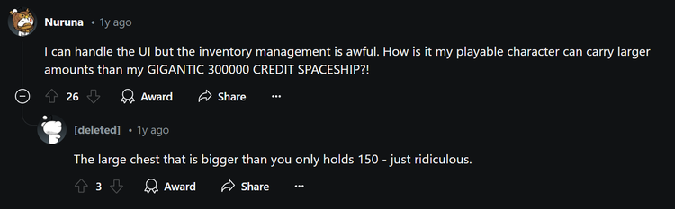
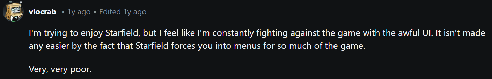
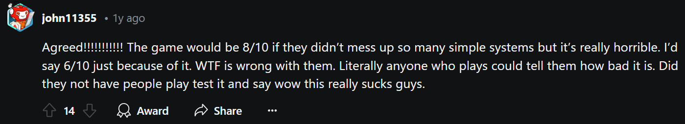
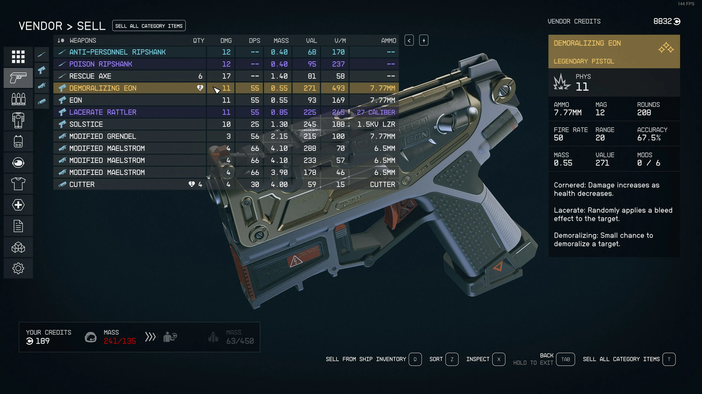
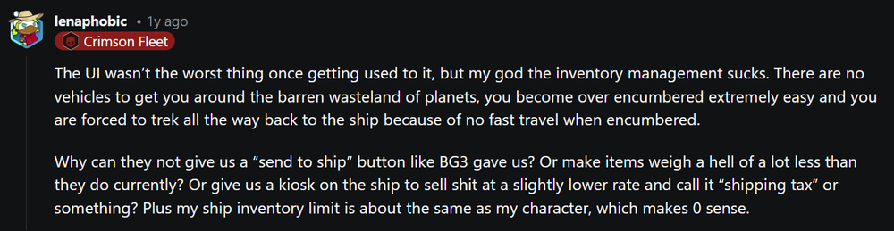
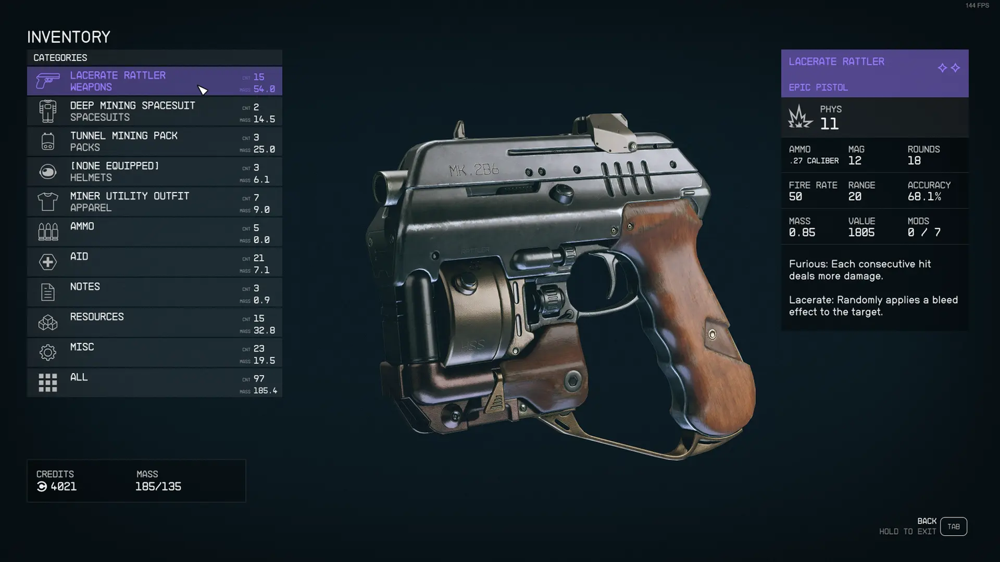
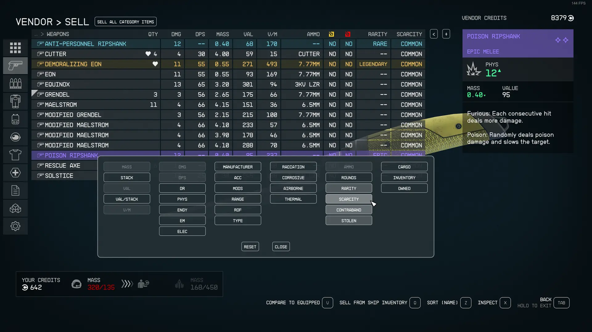
Visual Inspiration
Comparative research covered:
- The Witcher 3 — rich stat readouts, strong item categorization
- Destiny 2 — clean icon-based layout with expandable detail pane
- Baldur's Gate 3 — dense information hierarchy with excellent sorting
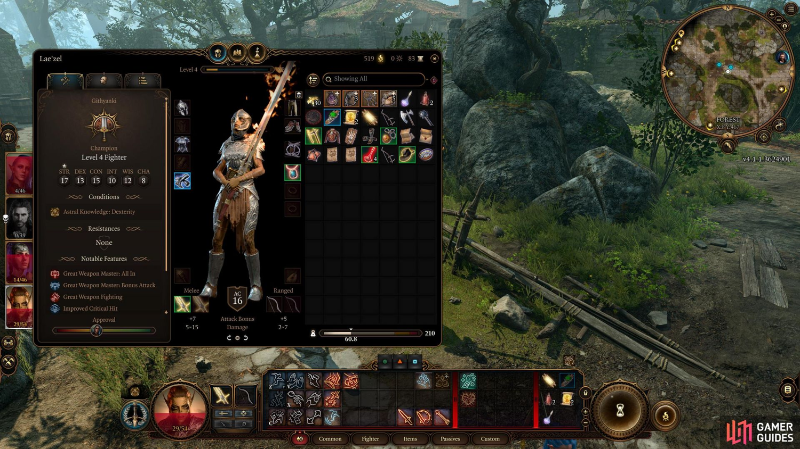
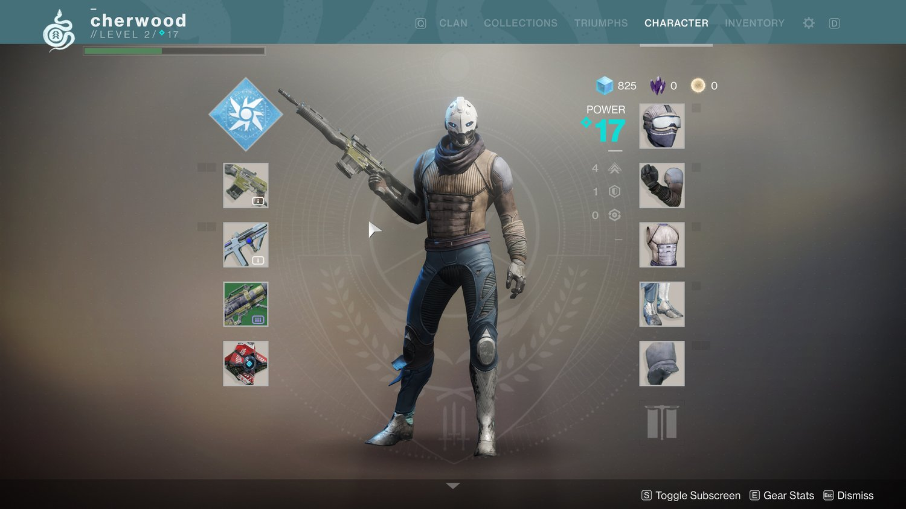
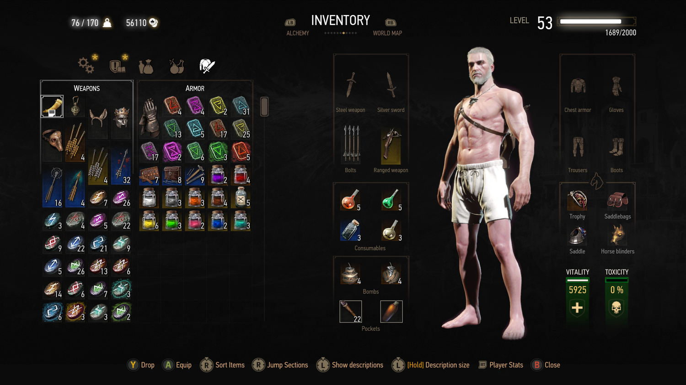
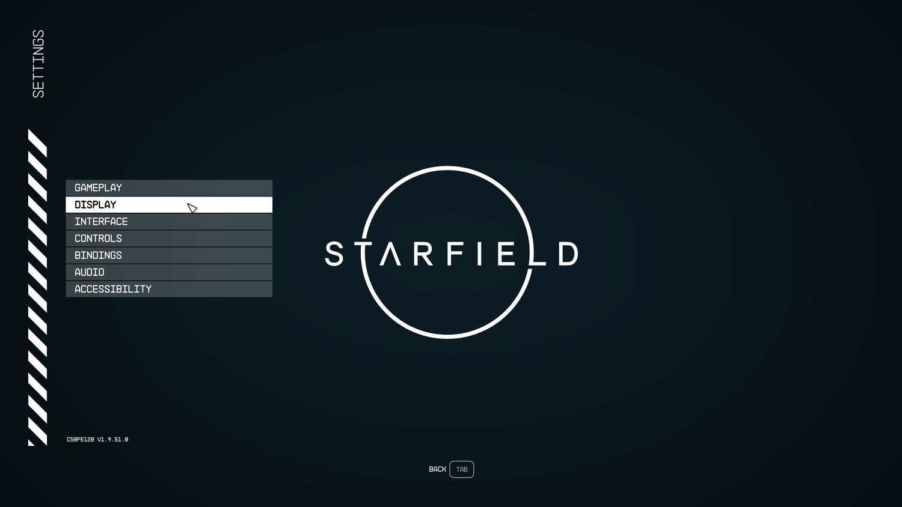
User Flow
A user flow diagram was developed before visual design began, mapping all major navigation paths through the inventory system from the Menu Landing screen to sub-categories.

Three Design Directions
Three concepts were developed and shared with the community for feedback:
- Middleground — Witcher/Destiny hybrid; icon grid with stat detail pane
- Minimalist — Destiny-inspired; clean rows, collapsed by default
- Full Functionality — Witcher/BG3 inspired; maximum data density
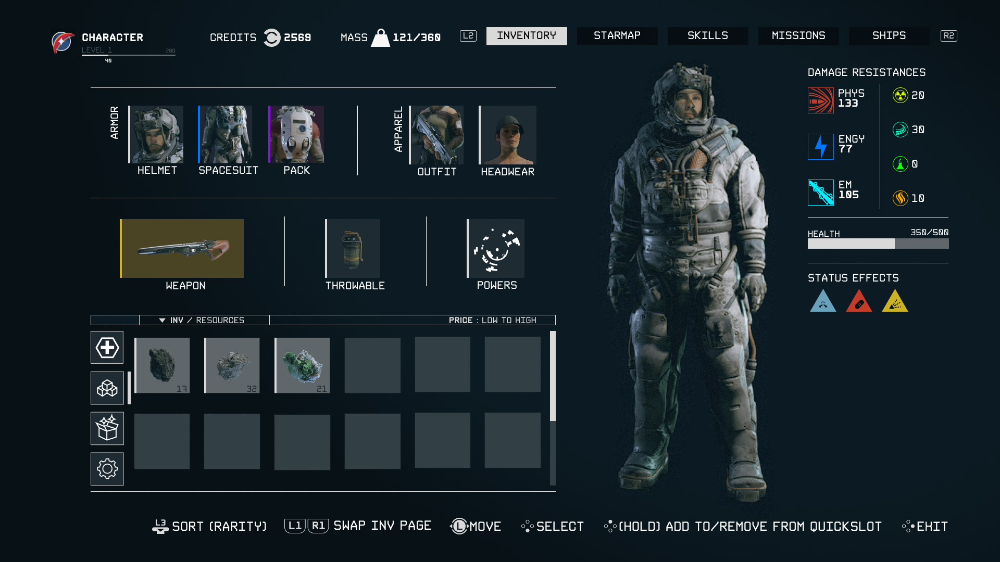
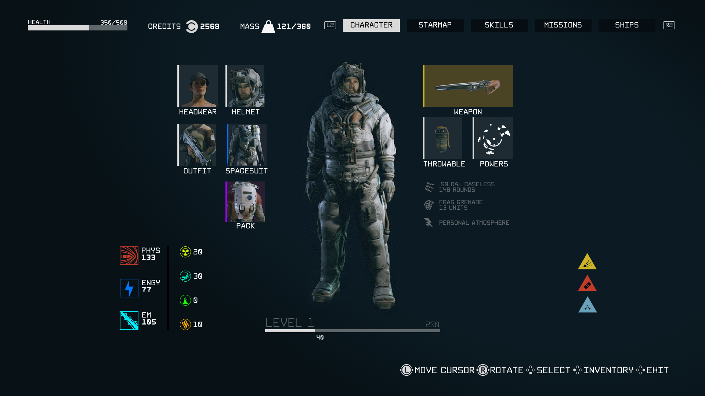
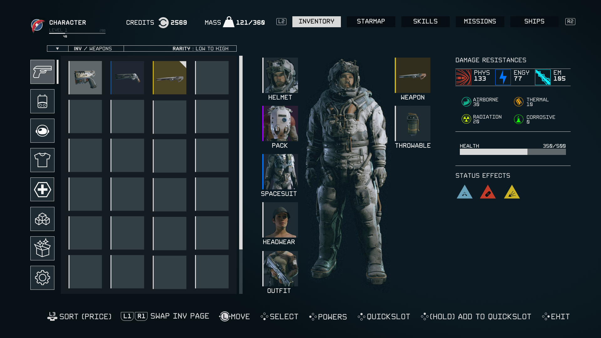
Community Feedback
Middleground and Full Functionality were most popular but critiqued as too cluttered. Minimalist received praise for clean layout. Players strongly preferred data readouts over icon-only slots. A small minority still preferred the vanilla UI, emphasizing how subjective game UI is.

Final Design
Menu Landing
The menu landing screen uses a Constellation watch-face design with basic character stats and a radial menu for top-level navigation. This replaces the flat list with a spatial anchor tied to the game's explorer identity.


Inventory Sub-Menu
The inventory sub-menu mimics the visual language of the base game while restoring utility. Subcategories allow filtering within each category (e.g., Firearms → Pistols, Rifles), and items can be sorted by mass, value, damage, or condition. Each item shows a detailed readout in the sidebar on selection.


UI/UX design for beloved game franchises is incredibly subjective. Fanbases carry strong opinions shaped by years of experience with specific systems, and satisfying them requires deeply understanding what they value rather than what objectively "improves" the interface.
Without hands-on usability testing, Reddit polling is only marginally useful — it reveals opinions but not actual usability barriers. The diversity of player needs (controller vs keyboard, RPG vet vs Starfield newcomer) makes compromise design extremely challenging.
The right design is rarely the most feature-rich or the most minimal — it's the one that best serves the specific player journey at a specific moment in the game.